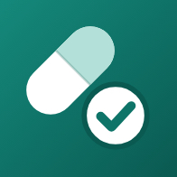

FineMediGizlilik Politikası
Yürürlük tarihi: 10 Kasım 2026
FineMedi, ilaçlarını zamanında almanı hatırlatan bir uygulamadır. Bu politika, uygulamanın verilerinle ne yaptığını açıklar. Kısaca: uygulamaya girdiğin verileri toplamıyoruz.
Hangi verileri işliyoruz?
Uygulamaya girdiğin bilgiler (ilaç adları, dozlar, saatler, notlar, aldım/atladım kayıtları) ve tercihlerin (dil, tema) yalnızca telefonunda saklanır. Bu bilgiler bize gönderilmez; yalnızca sen bir yedek dosyasını paylaşmayı seçersen telefonundan çıkar. Uygulamanın bir sunucusu, hesap sistemi, reklamı, analitik veya çökme raporlama aracı yoktur ve uygulama hiçbir ağ isteği yapmaz. Ayarlar'daki gizlilik ve destek bağlantıları telefonunun tarayıcısında açılır.
Bildirimler
Hatırlatmalar telefonunun kendi bildirim sistemiyle, cihaz üzerinde planlanır (yerel bildirim). Bildirimler için hiçbir sunucu kullanılmaz. Hatırlatmalarda ve "bitmek üzere" stok bildirimlerinde varsayılan olarak ilaç adı ve dozu görünür; Ayarlar'daki "Bildirimde ilaç adını gizle" seçeneğiyle yalnızca genel bir metin ("İlaç zamanı") gösterilir. İstersen işaretlemediğin doz için tekrar hatırlatma da açabilirsin. Kilit ekranında görünen bildirim içeriğini telefonunun bildirim ayarlarından yönetebilirsin.
Yedekleme dosyası
Ayarlar → Yedekleme'den yalnızca sen istediğinde ilaçlarını ve geçmişini içeren bir yedek dosyası oluşturabilirsin. Dosya telefonunun Paylaş menüsüyle açılır; nereye kaydedileceğini (ör. Dosyalar, iCloud Drive, e-posta) sen seçersin; uygulamanın web sürümünde dosya tarayıcının İndirilenler klasörüne iner. Dosya şifrelenmez ve sağlık bilgilerini içerir; güvenli bir yerde sakla. Bu dosya bize gönderilmez; seçtiğin hizmet (ör. iCloud, e-posta sağlayıcın) kendi gizlilik koşullarına tabidir. Bir yedeği geri yüklediğinde dosya yalnızca telefonunda okunur ve uygulamadaki mevcut verilerin yerini alır.
Üçüncü taraflar
Verilerini hiçbir üçüncü tarafla paylaşmıyoruz ve uygulamada üçüncü taraf izleme aracı bulunmuyor. Uygulamayı Apple App Store'dan indirdiğinde Apple'ın kendi gizlilik politikası geçerlidir; Apple'ın sağladığı anonim istatistikler ve çökme raporları yalnızca cihaz ayarlarında izin verdiysen paylaşılır; uygulama bunlara sağlık verisi eklemez.
Uygulamayı değerlendirme
Uygulama bir süre kullanıldıktan sonra Apple'ın standart değerlendirme penceresini gösterebilir. Uygulama bu sırada hiçbir bilgi göndermez; verdiğin puan ve yorum doğrudan Apple'a gider ve Apple'ın gizlilik politikasına tabidir.
Bize yazarsan
Destek için e-posta gönderirsen, e-posta adresini ve mesajını yalnızca sana cevap vermek için kullanırız. Bu bilgiler uygulamadaki verilerinle birleştirilmez, kimseyle paylaşılmaz ve konu çözüldükten sonra silinir. Mesajında sağlık bilgisi paylaşmak zorunda değilsin. Uygulamadaki "Geri bildirim gönder" e-posta uygulamanı hazır bir mesajla açar; mesaja yalnızca uygulama sürümü, telefonun işletim sistemi ve sürümü, uygulama dili, bildirim izni ve hatırlatma kurulu olup olmadığı (evet/hayır) eklenir; ilaç bilgisi eklenmez. Göndermeden önce mesajı görür ve değiştirebilirsin. Destek e-postaları Google (Gmail) üzerinden alınır ve Türkiye dışındaki sunucularda saklanabilir.
Verilerini silmek
Bir ilacı uygulama içinden silebilirsin. Tüm verilerini silmek için uygulamayı telefonundan kaldırman yeterlidir; verilerin bizde bir kopyası bulunmaz. Telefonunun kendi yedekleri (ör. iCloud cihaz yedeği) uygulama verilerini içerebilir; bunlar Apple ile aranda yönetilir.
Çocuklar
Uygulama çocuklara yönelik değildir ve hiçbir kullanıcıdan veri toplamaz.
KVKK
6698 sayılı Kişisel Verilerin Korunması Kanunu kapsamında: uygulamaya girdiğin sağlık bilgileri özel nitelikli kişisel veridir. Bu veriler yalnızca senin cihazında işlenir; geliştirici olarak bu verilere erişmiyor, bunları aktarmıyor ve saklamıyoruz. Uygulamaya girdiğin veriler için geliştirici tarafından yürütülen bir kişisel veri işleme faaliyeti yoktur. Destek için bize yazdığında paylaştığın bilgiler yukarıdaki "Bize yazarsan" bölümüne göre işlenir. Sorularını ve KVKK'dan doğan taleplerini aşağıdaki adrese iletebilirsin.
Tıbbi uyarı
FineMedi bir hatırlatma uygulamasıdır; doktor veya eczacı tavsiyesinin yerine geçmez. İlaçlarını her zaman doktorunun ve eczacının söylediği şekilde kullan.
Değişiklikler ve iletişim
Bu politika değişirse güncel sürüm bu sayfada yayımlanır ve yürürlük tarihi güncellenir. İletişim: producter44@gmail.com
EN
Privacy Policy
Effective date: November 10, 2026
FineMedi reminds you to take your medications on time. This policy explains what the app does with your data. In short: we don't collect the data you enter in the app.
What data is processed?
What you enter (medication names, doses, times, notes, taken/skipped records) and your preferences (language, theme) are stored only on your phone. They are never sent to us; they leave your phone only if you choose to share a backup file. The app has no server, no accounts, no ads, no analytics or crash-reporting tools, and it makes no network requests. The privacy and support links in Settings open in your phone's browser.
Notifications
Reminders are scheduled on your device by your phone's own notification system (local notifications). No server is involved. Reminders and "running low" stock notifications show the medication name and dose by default; with "Hide medication names in reminders" in Settings they show only a generic text ("Medication time"). You can also turn on a second reminder for doses you haven't marked. You can control what notifications show on the lock screen in your phone's settings.
Backup file
In Settings → Backup you can create a backup file with your medications and history, only when you choose to. The file opens in your phone's Share menu and you decide where it goes (e.g. Files, iCloud Drive, email); in the web version of the app, the file goes to your browser's Downloads folder. The file isn't encrypted and contains health information, so keep it somewhere safe. It is never sent to us; the service you choose (e.g. iCloud, your email provider) has its own privacy terms. When you restore a backup, the file is read only on your phone and replaces the data in the app.
Third parties
We don't share your data with any third party, and the app contains no third-party tracking. When you download the app from the Apple App Store, Apple's privacy policy applies; anonymous statistics and crash reports from Apple are shared only if you allow it in your device settings; the app adds no health data to them.
Rating the app
After you have used the app for a while, it may show Apple's standard rating dialog. The app sends nothing at that moment; your rating and review go directly to Apple under Apple's privacy policy.
If you contact us
If you email us for support, we use your email address and message only to reply to you. They aren't combined with your app data, aren't shared with anyone, and are deleted once the issue is resolved. You don't need to share health information in your message. "Send feedback" in the app opens your mail app with a prepared message that only adds the app version, the phone's operating system and version, the app language, the notification permission and whether reminders are set (yes/no); no medication information is added. You see the message and can change it before sending. Support e-mails are received through Google (Gmail) and may be stored on servers outside Türkiye.
Deleting your data
You can delete a medication inside the app. To delete all your data, uninstall the app; we have no copy of it. Your phone's own backups (e.g. iCloud device backup) may include app data; those are managed between you and Apple.
Children
The app is not directed to children and collects no data from anyone.
Your rights (KVKK / GDPR)
The health information you enter in the app is special-category personal data. It is processed only on your device; we don't access, transfer or store it, so there is no processing of in-app data by the developer. For support emails, see "If you contact us" above. You can send questions or requests about your rights to producter44@gmail.com.
Medical disclaimer
FineMedi is a reminder app and does not replace advice from your doctor or pharmacist. Always take your medications as they told you.
Changes and contact
If this policy changes, the new version is published on this page with a new effective date. Contact: producter44@gmail.com